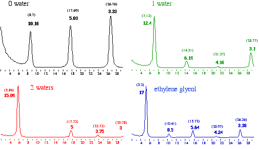
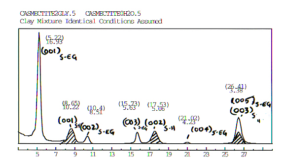
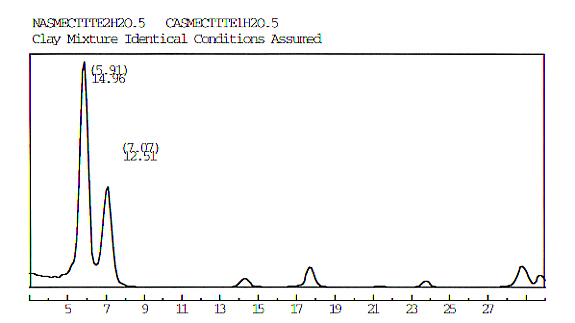
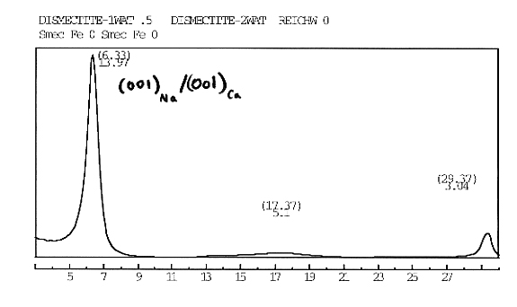
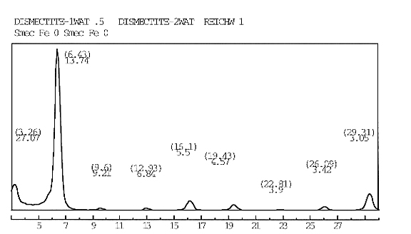
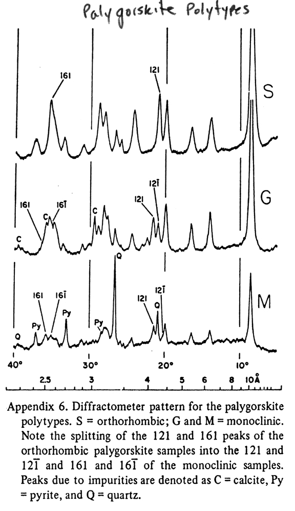

12 - Lecture notes for Clay
Mineralogy
Required reading: Moore and Reynolds, 117-125, 155-168
Brindley and Brown, pages
305-360
XRD identification of discrete clay minerals
Vermiculite - Operationally defined as those layers that
expand
to 14.5Å after Mg-saturation and solvation with glycerol
(not ethylene glycol - both polar organic compounds). Smectites
will expand to 18Å. If ethylene glycol is used, then smectite
expands to about 17Å.
Vermiculite accepts one layer of glycerol and smectites accept
two layers of glycerol.
(1)
Mg-vermiculite
Distinguishing vermiculite from smectite is not always
foolproof.
In reality, both mineral groups exhibit a range of layer
charges.
Those vermcilulites with higher layer charge (e.g., 0.8)
will readily collapse, while those with lower layer charge (e.g.,
0.6)
will readily expand.
Also, the presence of hydroxy-interlayers (HIV) will prop the
structures open and the XRD characteristics begin to resemble
those of chlorite.
Vermiculites and smectites are best diagnosed by performing a
number of different cation saturations, solvations and heatings.
See page 12 of handout. Mg, Ca vs. Na vs. K saturations.
(2,3) Mg-vermiculite
vs. Fe-vermiculite
Ratio of the (003)/(002)
Smectites
- Operationally defined as those layers that expand to 17 Å
upon ethylene glycol solvation.
(4, 5, 6, 7)
Interlayer water.

Why does talc (with no layer charge)
have no interlayer water?
- Recall that for 2:1 structures, the
overall
intralyer structure is negatively charged and the interlayer
cation is
there to compensate the charge.
- The hydration energy of the cation
(function of charge density and radius) attracts water.
- The presence of water pushes the 2:1
layers
apart.
- A monovalent cation has a lower
hydration
energy than an equivalent sized divalent cation. Therefore,
monovalent
cations do not hold the layers apart as well as divalent
cations.
- Divalent cations have higher hydration
energies. The presence of a strongly held hydration sphere
better holds
the layers apart.
- The response of the interlayer distance
is
then going to be a result of the balance of forces necessary
to
dehydrate the cation and the forces of attraction between the
layers
and the cation.
- Talc has no interlayer cation therefore,
no
water to be drawn into the structure.
Mixtures of discrete clay minerals
Most often in nature we encounter mixtures of minerals (i.e., a
mineral
assemblage). How do we discriminate mixtures.
For example we can have a range of hydration states within a
smectite
alone. The extreme (and not realistic) example is a 50/50
mixture
of hydrated and dehydrated smectite.

Another example (maybe more realistic is a 50/50 mixture of 1-water
and
2-water hydration states.

What would happen if the 1-water and 2-water layers were randomly
stacked? This brings to our attention the concept of a mixed-layer
clay
mineral. Below is an example of a 50/50 randomly mixed layer
mineral.

What would happen if the 1-water and 2-water layers were stacked in
an
ordered fashion? This again brings to our attention the concept of a
mixed-layer clay
mineral. Below is an example of a 50/50 ordered mixed layer
mineral.

Click here
for a table that shows changes in low angle reflection (00l) of
discrete clay minerals with ethylene glycol and thermal treatments.
Palygorskite
and Sepiolite structures.
-

{kind=link}
{kind=link}
{kind=link}